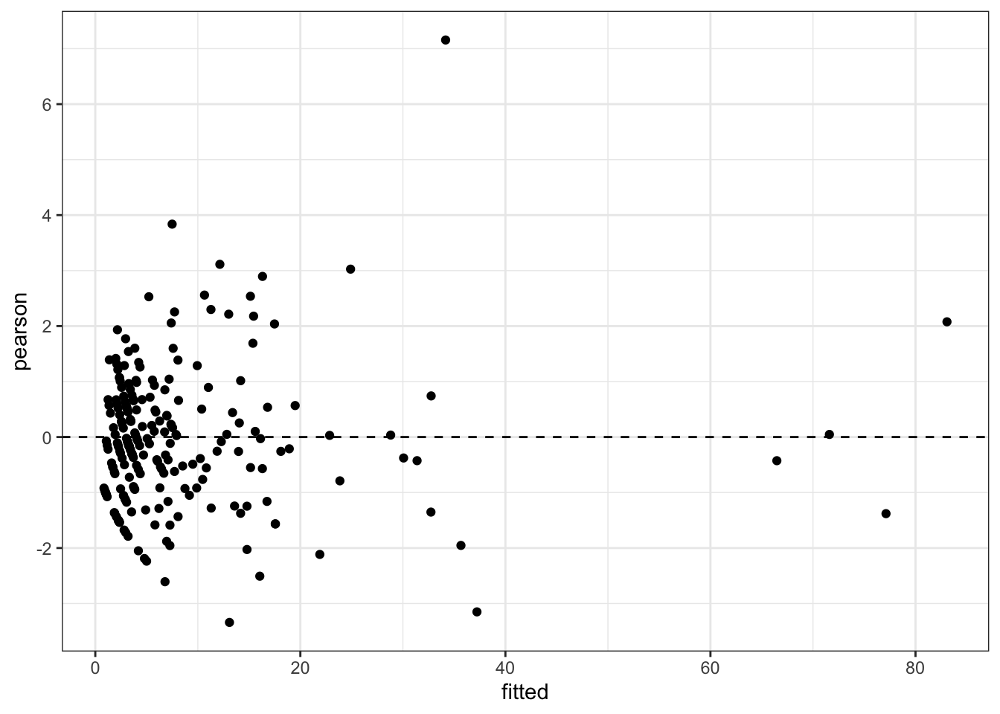
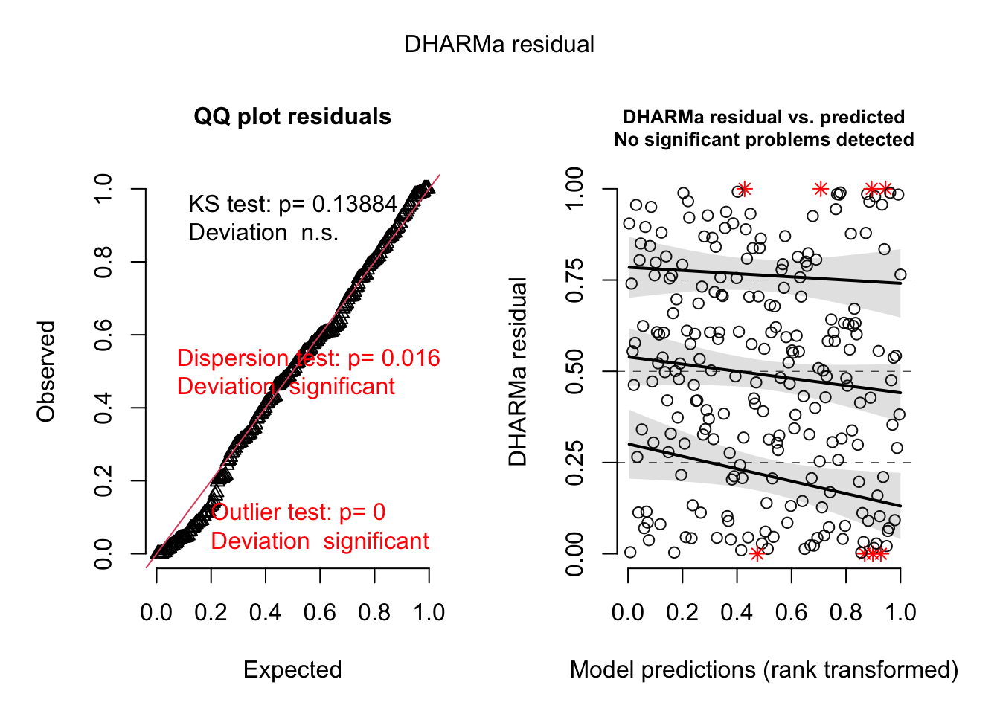
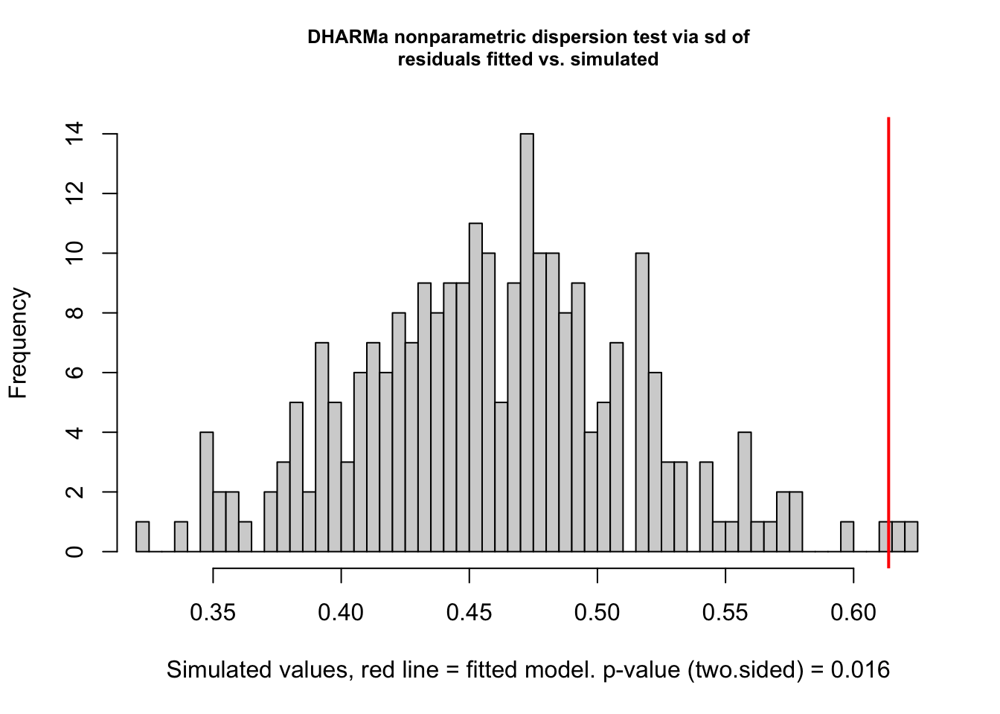
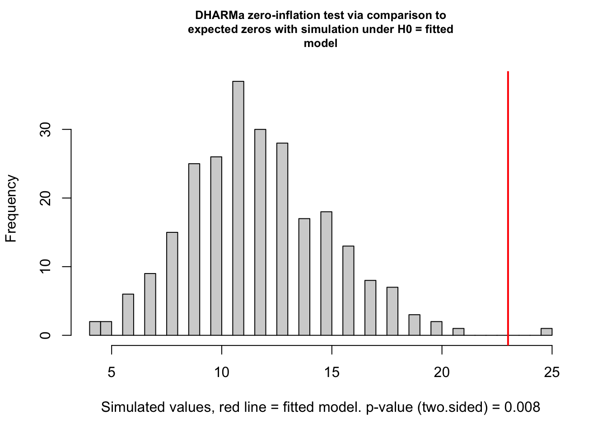

data("epil", package = "MASS")
epil <- MASS::epil |>
mutate(subject = factor(subject), period_c = period - 1, exposure = 2)6. Generalized linear mixed models
1. Aim
GLMMs estimate subject-specific effects for non-Gaussian repeated outcomes by conditioning on latent random effects. Likelihood inference integrates over the random-effects distribution; Laplace and adaptive Gauss–Hermite quadrature trade computation against approximation accuracy.
2. Model specification
\[ g\{E(Y_{ij}\mid b_i)\}=x_{ij}^{\mathsf T}\beta+z_{ij}^{\mathsf T}b_i+log(e_{ij}), \qquad b_i\sim N(0,D), \] with conditional independence of \(Y_{ij}\) given \(b_i\). The marginal likelihood contribution is \[ L_i(\beta,D)=\int\left\{\prod_j f(y_{ij}\mid b_i;\beta)\right\}\phi(b_i;0,D)\,db_i. \]
3. R packages/functions
lme4::glmer() fits standard-family GLMMs using Laplace (nAGQ = 1) or adaptive Gauss–Hermite quadrature (nAGQ > 1, scalar random effect). glmmTMB::glmmTMB() supports negative-binomial, zero-inflated, hurdle, beta-binomial, offset, and dispersion submodels. DHARMa supplies simulation-based diagnostics.
4. Data
MASS::epil contains four repeated seizure counts per subject; exposure = 2 denotes the two-week count interval.
5. Fit
form <- y ~ trt * period_c + lbase + lage + offset(log(exposure)) + (1 | subject)
pois_laplace <- glmer(
form, data = epil, family = poisson(link = "log"), nAGQ = 1,
control = glmerControl(optimizer = "bobyqa", optCtrl = list(maxfun = 2e5))
)
pois_agq <- update(pois_laplace, nAGQ = 7)
summary(pois_laplace)Generalized linear mixed model fit by maximum likelihood (Laplace Approximation) ['glmerMod']
Family: poisson ( log )
Formula: y ~ trt * period_c + lbase + lage + offset(log(exposure)) + (1 | subject)
Data: epil
Control: glmerControl(optimizer = "bobyqa", optCtrl = list(maxfun = 2e+05))
AIC BIC logLik -2*log(L) df.resid
1347.4 1371.7 -666.7 1333.4 229
Scaled residuals:
Min 1Q Median 3Q Max
-3.3410 -0.8987 -0.1029 0.5736 7.1561
Random effects:
Groups Name Variance Std.Dev.
subject (Intercept) 0.2667 0.5164
Number of obs: 236, groups: subject, 59
Fixed effects:
Estimate Std. Error z value Pr(>|z|)
(Intercept) 1.02901 0.08054 12.776 < 2e-16 ***
trt1 0.13551 0.08061 1.681 0.09277 .
period_c -0.05854 0.02018 -2.900 0.00373 **
lbase 1.02802 0.10115 10.163 < 2e-16 ***
lage 0.33589 0.34282 0.980 0.32719
trt1:period_c 0.01574 0.02018 0.780 0.43558
---
Signif. codes: 0 '***' 0.001 '**' 0.01 '*' 0.05 '.' 0.1 ' ' 1
Correlation of Fixed Effects:
(Intr) trt1 perd_c lbase lage
trt1 0.017
period_c -0.358 -0.009
lbase -0.096 0.037 0.000
lage -0.009 -0.117 0.000 0.173
trt1:perd_c -0.009 -0.357 0.011 0.000 0.000cbind(Laplace = fixef(pois_laplace), AGQ7 = fixef(pois_agq)) Laplace AGQ7
(Intercept) 1.02900632 1.02877458
trt1 0.13550712 0.13561780
period_c -0.05854259 -0.05854263
lbase 1.02802112 1.02805965
lage 0.33588985 0.33566644
trt1:period_c 0.01573738 0.01573753AIC(pois_laplace, pois_agq)if (requireNamespace("glmmTMB", quietly = TRUE)) {
nb_glmm <- glmmTMB::glmmTMB(
y ~ trt * period_c + lbase + lage + offset(log(exposure)) + (1 | subject),
data = epil,
family = glmmTMB::nbinom2(link = "log")
)
summary(nb_glmm)
AIC(pois_laplace, nb_glmm)
}Transition model
epil_transition <- epil |>
group_by(subject) |>
arrange(period, .by_group = TRUE) |>
mutate(lag_y = lag(y)) |>
ungroup() |>
filter(!is.na(lag_y))
transition_fit <- glm(
y ~ trt + period_c + log1p(lag_y) + lbase + lage,
family = quasipoisson(link = "log"), data = epil_transition
)
summary(transition_fit)
Call:
glm(formula = y ~ trt + period_c + log1p(lag_y) + lbase + lage,
family = quasipoisson(link = "log"), data = epil_transition)
Coefficients:
Estimate Std. Error t value Pr(>|t|)
(Intercept) 0.90027 0.21272 4.232 3.77e-05 ***
trt1 0.03065 0.05524 0.555 0.580
period_c -0.04029 0.06364 -0.633 0.527
log1p(lag_y) 0.49375 0.08001 6.171 4.76e-09 ***
lbase 0.60395 0.11222 5.382 2.40e-07 ***
lage 0.07561 0.25769 0.293 0.770
---
Signif. codes: 0 '***' 0.001 '**' 0.01 '*' 0.05 '.' 0.1 ' ' 1
(Dispersion parameter for quasipoisson family taken to be 3.824099)
Null deviance: 1770.91 on 176 degrees of freedom
Residual deviance: 555.05 on 171 degrees of freedom
AIC: NA
Number of Fisher Scoring iterations: 56. Extract & interpret
exp(cbind(estimate = fixef(pois_agq), confint(pois_agq, parm = "beta_", method = "Wald"))) estimate 2.5 % 97.5 %
(Intercept) 2.797635 2.3873622 3.2784150
trt1 1.145244 0.9772055 1.3421784
period_c 0.943138 0.9063716 0.9813959
lbase 2.795636 2.2909868 3.4114473
lage 1.398872 0.7124896 2.7464877
trt1:period_c 1.015862 0.9762606 1.0570699as.data.frame(VarCorr(pois_agq))head(ranef(pois_agq)$subject)conditional_rate <- predict(pois_agq, type = "response", re.form = NULL)
fixed_re_zero_rate <- predict(pois_agq, type = "response", re.form = NA)
head(cbind(conditional_rate, fixed_re_zero_rate)) conditional_rate fixed_re_zero_rate
1 3.573597 3.059639
2 3.423856 2.931435
3 3.280390 2.808602
4 3.142936 2.690916
5 3.565044 3.026148
6 3.415662 2.899347Fixed-effect exponentials are subject-specific conditional rate ratios at equal random effects. The random-intercept variance is heterogeneity on the log-rate scale; ranef() returns empirical-Bayes conditional modes. re.form = NULL predicts for fitted subjects conditional on their random effects; re.form = NA sets random effects to zero and is not, for a nonlinear link, the marginal population mean.
Under a logistic random-intercept model, \[ \beta_{PA}\approx\beta_{SS}/\sqrt{1+0.35\sigma_b^2}, \] so the corresponding GEE coefficient is typically attenuated. Under a log link with normal random intercept, marginalization adds \(\sigma_b^2/2\) to the intercept when random-effect variance is covariate-invariant; slopes then retain the same multiplicative interpretation.
7. Diagnostics
lme4::isSingular(pois_laplace)[1] FALSEpois_laplace@optinfo$conv$lme4$messagesNULLpearson <- residuals(pois_laplace, type = "pearson")
overdispersion <- sum(pearson^2) / (nobs(pois_laplace) - length(fixef(pois_laplace)))
overdispersion[1] 1.577403ggplot(data.frame(fitted = fitted(pois_laplace), pearson), aes(fitted, pearson)) +
geom_point() + geom_hline(yintercept = 0, linetype = 2)
if (requireNamespace("DHARMa", quietly = TRUE)) {
sim_res <- DHARMa::simulateResiduals(pois_laplace, n = 250, plot = FALSE)
plot(sim_res)
DHARMa::testDispersion(sim_res)
DHARMa::testZeroInflation(sim_res)
}


DHARMa zero-inflation test via comparison to expected zeros with simulation under H0 =
fitted model
data: simulationOutput
ratioObsSim = 1.9334, p-value = 0.008
alternative hypothesis: two.sidedCompare Laplace and higher-order quadrature when cluster sizes are small or random-effect variance is large; inspect gradients/Hessian, singularity, simulated residual uniformity, dispersion, zero inflation, and subject-level influence.
8. Caveats
- GEE is population-averaged; GLMM is subject-specific. Do not compare coefficient magnitudes without marginalization and link-specific attenuation.
glmer()uses Laplace atnAGQ = 1;nAGQ = 0is a faster, less accurate approximation. Adaptive quadrature withnAGQ > 1is restricted to a single scalar random-effect term.- SAS
PROC GLIMMIXmay default to pseudo-likelihood or different quadrature depending on options; match the estimation method explicitly before comparing results. - Overdispersion can reflect omitted random effects, serial dependence, zero inflation, or a wrong mean/variance family; a negative-binomial fit is not an automatic cure.
- LRTs for random-effect variances have boundary nulls; plain chi-square p-values can be anticonservative.
- Conditional modes are shrunken predictions and their empirical distribution is not a direct normality test of the latent population.
- A transition-model coefficient conditions on observed response history and is neither a GEE marginal effect nor a random-effects subject-specific effect; initial-condition and missing-history handling must be stated.
- Source-backed: conditional interpretation, marginal likelihood, quadrature/approximations, and empirical Bayes follow the notes. Standard-practice addition:
glmmTMBandDHARMasupply current idiomatic R implementations.
9. Source references
/Users/wenbinwu/Documents/UNC/26Spring/BIOS767/Lecture-Notes/BIOS-767-Part-015.pdf, pp. 5–24, 31–39, and 50–61 (GLMM specification, estimation, interpretation)./Users/wenbinwu/Documents/UW/25Winter/STAT571/notes/6.0 - GLMM_1.pdf, pp. 1–16 and 22–30 (subject-specific models)./Users/wenbinwu/Documents/UW/25Winter/STAT571/notes/6.1 - GLMM_2.pdf, pp. 5–13 (GEE/GLMM marginalization and attenuation)./Users/wenbinwu/Documents/UW/25Winter/STAT571/notes/6.2 - GLMM_3.pdf, pp. 1–21;/Users/wenbinwu/Documents/UW/25Winter/STAT571/notes/6.3 - GLMM_4.pdf, pp. 1–7 (quadrature, Laplace, PQL, empirical Bayes)./Users/wenbinwu/Documents/UNC/26Spring/BIOS767/Assignments/UNC-BIOS767/analysis_Wenbin/Assignment7/BIOS767-HW7.Rmd, code chunksfit_modelsandrandom_effects_predictions(R GLMM comparison and predictions)./Users/wenbinwu/Documents/UW/25Winter/STAT571/HW/HW5/STAT571-HW5-Code.Rmd, GLMM/GEE comparison chunks (conditional versus marginal fits)./Users/wenbinwu/Documents/UNC/26Spring/BIOS767/Lecture-Notes/BIOS-767-Part-020.pdf, pp. 2–32 (transition models and lagged responses).